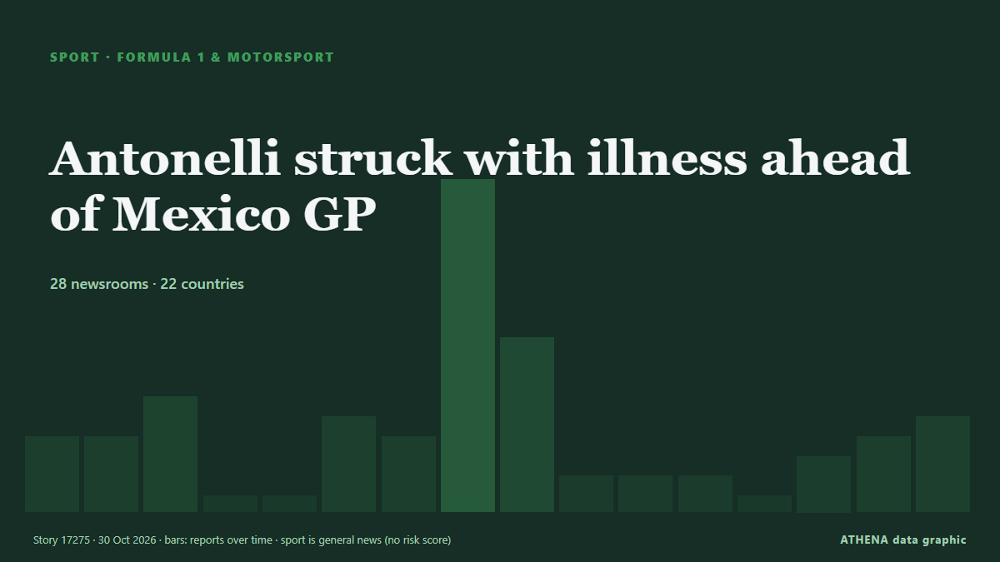

الرياضةبطاقة عنوان. 28 وسيلة إعلام في 22 دولة التغطية: تقارير كل 12 ساعات
Antonelli struck with illness ahead of Mexico GP

باختصار
نشرته بشكل مستقل 28 مصدرًا في 22 دولة منذ 22 أكتوبر، وأول من نشره Arab News؛ والتغطية تتراجع. تُؤرشف أخبار الرياضة والثقافة دون تقييم للمخاطر. الثقة 92٪ (مرتفعة)، وعدد المصادر المستقلة المؤكِّدة: 28، بمتوسط موثوقية للمصادر يبلغ 74٪. وسائل الإعلام حسب البلد: المملكة المتحدة (4), المملكة العربية السعودية (3), باكستان (3). التغطية: من 22 أكتوبر إلى 26 أكتوبر، 100 ساعة.
ما الذي تغيّر: 7 تقارير جديدة من 7 غرف أخبار خلال 24 ساعة حتى 30 أكتوبر.
العنوان الأول: Antonelli wins US Grand Prix but must wait for title
تُعرض العناوين بالإنجليزية كما نُشرت.
نظرة سريعة
6.3الأهمية
—بدون تقييم للمخاطر
92%الثقة
اختير وقُيِّم وكُتب وفق منهجية ATHENA المنشورة. لا يتدخل أي محرر في الأحداث بعينها. كيف يُنتَج ›
| 22 Oct 04:32 UTC | 3 |
|---|---|
| 22 Oct 16:32 UTC | 3 |
| 23 Oct 04:32 UTC | 5 |
| 23 Oct 16:32 UTC | 0 |
| 24 Oct 04:32 UTC | 0 |
| 24 Oct 16:32 UTC | 4 |
| 25 Oct 04:32 UTC | 3 |
| 25 Oct 16:32 UTC | 16 |
| 26 Oct 04:32 UTC | 8 |
| 26 Oct 16:32 UTC | 1 |
| 27 Oct 04:32 UTC | 1 |
| 27 Oct 16:32 UTC | 1 |
| 28 Oct 04:32 UTC | 0 |
| 28 Oct 16:32 UTC | 2 |
| 29 Oct 04:32 UTC | 3 |
| 29 Oct 16:32 UTC | 4 |
لماذا هذه الأرقام
الأهمية
الامتداد — الدول التي تغطيه
الاتساع — وسائل إعلام مختلفة
الجِدّة
قوائم المتابعة
التنوع — المناطق وأنواع وسائل الإعلام
الخطر
—
الثقة
وسائل إعلام مستقلة
موثوقية المصادر
الدول
الاستقرار
اتساق التصنيف
التغطية — من نشر الخبر ومتى
العنوان كما نُشر · يفتح الأصل- Arab News · المملكة العربية السعوديةVerstappen bids to delay Antonelli’s F1 coronation in US
- Express Tribune · باكستانVerstappen bids to delay Antonelli's F1 coronation
- The National · الإمارات العربية المتحدةF1 title race explained: What Kimi Antonelli needs to become champion at the United States Grand Prix
- Taipei Times · تايوانVerstappen seeks to delay Antonelli’s F1 coronation
- Express Tribune · باكستانAntonelli eyes perfect weekend in title bid
- Times of India · الهندCan Kimi Antonelli clinch the F1 2026 title in Austin?
- The National · الإمارات العربية المتحدةF1 power rankings and US GP predictions: Verstappen eyes hat-trick while Antonelli has title in grasp
- The Rio Times · البرازيلUS Grand Prix Weekend Opens in Austin
- Daily Maverick · جنوب أفريقياTITLE BECKONS: Maiden Formula One title in sight for phenom Kimi Antonelli
- Cyprus Mail · قبرص‘Slow down’: Hamilton jokes to champion-in-waiting Antonelli
- The Rio Times · البرازيلAntonelli Can Clinch F1 Title in Austin
- Jamaica Observer · جامايكاHamilton on top with Antonelli fourth in final practice at US Grand Prix
- CNA (Channel NewsAsia) · سنغافورةAntonelli on pole for US Grand Prix with F1 title in sight
- ABC News Australia · أسترالياAntonelli on pole as he eyes record-setting world F1 title
- The Rio Times · البرازيلAntonelli Takes Austin Pole, Eyes F1 Title
- Jamaica Observer · جامايكاAntonelli storms to US Grand Prix pole on weekend he can take title
- Asharq Al-Awsat (English) · المملكة العربية السعوديةVerstappen’s Advice to Antonelli: Enjoy the Ride and Celebrate
- Nile Post · أوغنداAntonelli stands on brink of history in Austin
- The Irish News (Belfast) · المملكة المتحدةKimi Antonelli moves to brink of F1 title with United States Grand Prix win
- Cyprus Mail · قبرصAntonelli on brink of title after winning US Grand Prix
- CNA (Channel NewsAsia) · سنغافورةAntonelli wins US Grand Prix but must wait for title
- Evening Standard (London) · المملكة المتحدةKimi Antonelli's wait for maiden F1 title extended despite winning United States Grand Prix
- NL Times · هولنداMax Verstappen takes third in Austin as Kimi Antonelli closes in on F1 title
- The Namibian · ناميبياAntonelli wins US Grand Prix to close on world title
- The Korea Times · كوريا الجنوبيةKimi Antonelli wins dominant US Grand Prix, tightens grip on historic F1 title chase
- The Irish News (Belfast) · المملكة المتحدةKimi Antonelli aiming to complete his F1 title march in style in Mexico City
- Anadolu Agency (English) · تركياAntonelli misses out on clinching F1 title despite dominant US Grand Prix win
- ABC News Australia · أسترالياAntonelli is two points away from the F1 title, and can win it next week
- Express Tribune · باكستانAntonelli wins US Grand Prix
- Arab News · المملكة العربية السعوديةKimi Antonelli wins US Grand Prix and tightens his grip on historic F1 title chase
- Jamaica Observer · جامايكاAntonelli wins US Grand but title triumph has to wait another week
- The National · الإمارات العربية المتحدةKimi Antonelli wins US Grand Prix to move within touching distance of F1 title
- Oman Observer · عُمانAntonelli wins US Grand Prix but must wait for title
- Nile Post · أوغنداAntonelli wins in US but has to wait to secure title
- Türkiye Today · تركياKimi Antonelli wins US Grand Prix but F1 title celebration put on hold
- Cyprus Mail · قبرصAntonelli wins US Grand Prix but must wait for title
- The Irish News (Belfast) · المملكة المتحدةGeorge Russell says second spot would mean nothing as Kimi Antonelli nears title
- IOL · جنوب أفريقياAntonelli on brink of securing Drivers’ Championship crown with United States GP win
- Al Jazeera English · قطرKimi Antonelli wins US Grand Prix, closes in on F1 championship
- ANSA English · إيطالياF1: Antonelli two points from title after winning United States Grand Prix